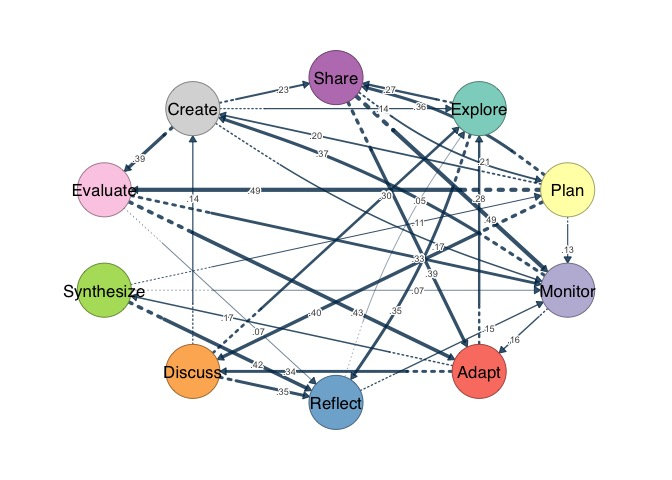
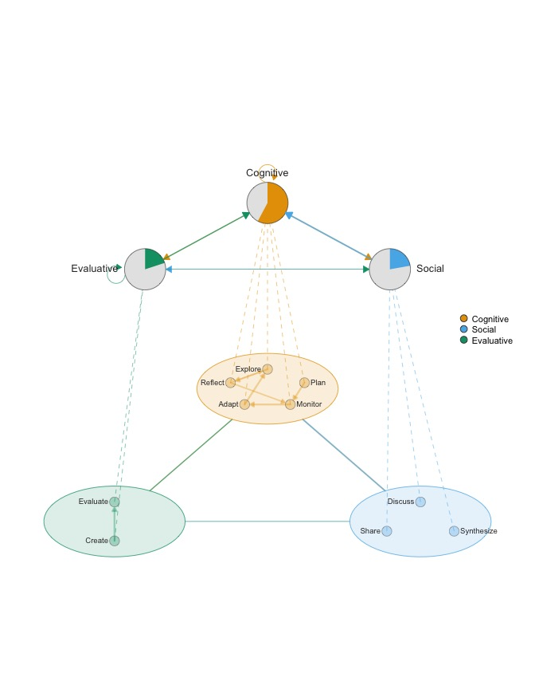
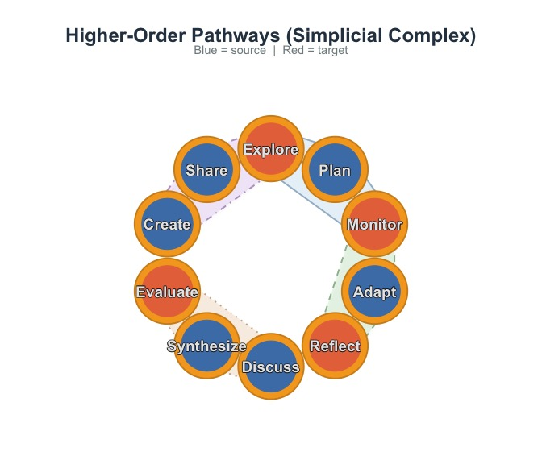

cograph is a modern R package for the analysis and visualization of complex networks, designed for simplicity, tidy outputs, comprehensive statistics and up-to-date network science. cograph accepts matrices, edge lists, and igraph, statnet, qgraph and tna objects without conversion, and offers a wide array of tools for plotting, wrangling, centrality, community detection, motif, robustness, multilayer and higher-order analysis.
Installation
# Release version from CRAN
install.packages("cograph")
# Development version from GitHub
# install.packages("remotes")
remotes::install_github("sonsoleslp/cograph")Quick start
The examples use regulation_net, a synthetic weighted transition network among ten learning states included in the package. splot() plots it in one call, and tna_styling = TRUE applies the visual conventions of transition networks.

centrality() returns any combination of measures as a tidy data frame, from the classical measures to recent ones such as randomized shortest-path betweenness and Trust-PageRank.
centrality(regulation_net,
measures = c("strength", "betweenness", "pagerank",
"rsp_betweenness", "trust_pagerank"),
sort_by = "pagerank", digits = 3)
#> node strength_all betweenness pagerank rsp_betweenness trust_pagerank
#> 1 Monitor 1.87 18.0 0.184 132.027 0.147
#> 2 Create 1.64 13.0 0.138 102.913 0.117
#> 3 Reflect 1.39 10.0 0.125 79.405 0.084
#> 4 Adapt 1.77 15.0 0.124 91.887 0.112
#> 5 Explore 1.39 5.0 0.118 79.715 0.086
#> 6 Share 1.95 9.0 0.095 69.907 0.092
#> 7 Evaluate 1.71 3.0 0.074 51.387 0.092
#> 8 Discuss 1.53 0.5 0.068 43.823 0.088
#> 9 Synthesize 0.77 6.5 0.038 23.304 0.067
#> 10 Plan 1.90 15.5 0.036 22.235 0.114plot_mcml() shows a network whose nodes belong to clusters as a two-layer hierarchy, with the node-level network below and the cluster-level network above.
clusters <- list(Cognitive = c("Explore", "Plan", "Monitor", "Adapt", "Reflect"),
Social = c("Discuss", "Synthesize", "Share"),
Evaluative = c("Evaluate", "Create"))
plot_mcml(regulation_net, clusters)
plot_simplicial() visualizes higher-order pathways over the network, with each pathway joining the states that lead to a target state.
plot_simplicial(regulation_net,
c("Explore Plan -> Monitor", "Monitor Adapt -> Reflect",
"Discuss Synthesize -> Evaluate", "Create Share -> Explore"))
What cograph covers
-
Visualization.
splot()plots any supported input with specialized styling for transition and psychological networks, alongside a wide array of specialized plots from alluvial flows and chord diagrams to bootstrap forest plots and temporal prisms. - Wrangling. cograph offers a family of wrangling verbs for selecting, filtering, thresholding, transforming and editing networks, each returning a network so that the verbs chain with the native pipe.
-
Centrality.
centrality()returns a large collection of node centrality measures across all major families as a tidy data frame, tested against igraph, sna, centiserve, NetworkX and other implementations where they exist. -
Network statistics.
network_summary()returns density, diameter, centralization, reciprocity, transitivity and many further statistics in one data frame. -
Communities.
communities()runs a range of detection algorithms through one call, with consensus, comparison and significance testing of partitions. -
Motifs.
motifs()andsubgraphs()count the triads of the MAN classification, test their frequencies and identify the nodes that form each pattern. -
Robustness.
robustness()andvulnerability()simulate targeted and random attacks and measure each node’s contribution to the efficiency of the network. - Clusters, layers and higher-order structure. cograph offers hierarchical plots for multi-cluster networks, supra-adjacency tools for multilayer networks, and visualization of higher-order pathways estimated with Nestimate.
Documentation
Tutorials
-
Network visualization with cograph: a complete guide to plotting with
splot(). - Communities and higher-order networks: detecting communities and visualizing them over the network.
- Network estimation with Nestimate and cograph: from sequence data to bootstrapped, compared and clustered networks.
-
Multi-cluster multi-level visualization: hierarchical plots of clustered networks with
plot_mcml(). - Higher-order network analysis with simplicial complexes: from transition networks to topological analysis.
Articles
- Introduction to cograph: an overview of the package.
- Why cograph?: the design of the package.
- Centrality catalogue: every centrality measure with its definition and interpretation.
- cograph and the Centrality Zoo: cograph’s measures compared with the Zoo and with other packages.
- Plotting TNA models: a gallery of TNA plots.
- Advanced MCML examples: further multi-cluster figures.
- Bootstrap forest plots: confidence intervals of bootstrapped edges.
- Migrating from qgraph to splot: qgraph arguments and their cograph equivalents.